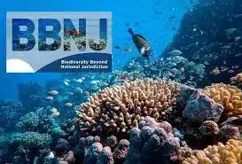
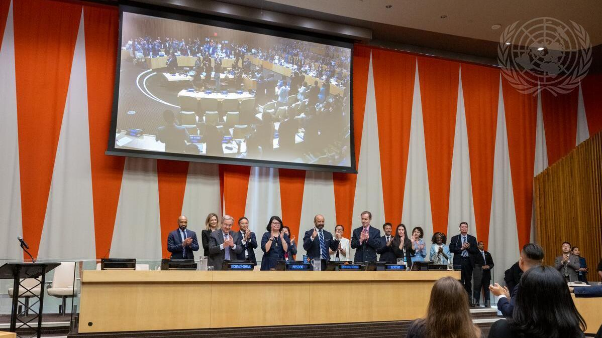
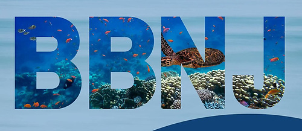
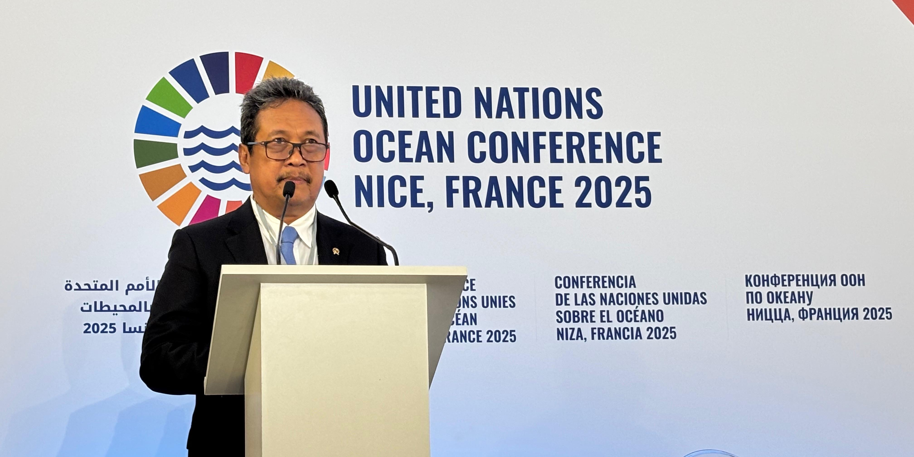

   
Kerja sama multilateral dalam kerangka Biodiversity Beyond National Jurisdiction (BBNJ) merupakan inisiatif internasional yang bertujuan memperkuat perlindungan keanekaragaman hayati laut di wilayah laut lepas yang tidak berada dalam yurisdiksi negara mana pun. Perjanjian ini dibangun melalui kolaborasi banyak negara di bawah Perserikatan Bangsa-Bangsa dan dirancang untuk memastikan bahwa pemanfaatan sumber daya laut dilakukan secara adil, transparan, dan berkelanjutan. Melalui pendekatan kolektif ini, negara-negara berupaya menciptakan aturan yang mampu menjaga kesehatan ekosistem laut sekaligus mendukung pembangunan berkelanjutan di tingkat global.
Melalui BBNJ, negara-negara sepakat mengembangkan berbagai mekanisme penting, seperti pembentukan kawasan lindung laut lepas, penilaian dampak lingkungan terhadap aktivitas manusia, pengelolaan sumber daya genetik laut, serta peningkatan kapasitas dan transfer teknologi bagi negara berkembang. Upaya ini bertujuan mengurangi risiko kerusakan ekosistem yang sebelumnya sulit dikendalikan karena ketiadaan regulasi internasional yang kuat. Dengan demikian, perjanjian ini berfungsi sebagai alat untuk memperbaiki tata kelola laut global secara lebih terstruktur dan ilmiah.
Kerja sama multilateral tersebut menghasilkan manfaat bagi komunitas internasional, termasuk perlindungan keanekaragaman hayati laut, peningkatan keamanan pangan melalui pengelolaan sumber daya yang lebih stabil, serta penguatan riset dan inovasi kelautan yang dapat diakses oleh negara berkembang. Selain itu, regulasi yang disepakati juga membuka jalan bagi pemanfaatan laut yang lebih bertanggung jawab, sehingga keberlanjutan sumber daya dapat dijaga untuk generasi mendatang. Dengan adanya koordinasi lintas negara, langkah pencapaian SDG 14 menjadi lebih efektif karena melibatkan komitmen bersama dalam menjaga laut sebagai aset global.